クイックシグモイダルフィットガジェット
サマリー
クイックシグモイダルフィットガジェットはユーザがインタラクティブに操作できるROI領域に指定したグラフの一部分に、すばやくシグモイダルフィットを実行できるツールです。
必要なOriginのバージョン: Origin 2015 SR0以降
学習する項目
- グラフ上でクイックシグモイダルフィットガジェットを使う
- フィットオプションを選択する
- NLFitダイアログに切り替える
- フィット結果を出力する
- フィット曲線上でX/Y値を探す
ステップ
このチュートリアルは、チュートリアルデータプロジェクト（<Origin EXE フォルダ>\Samples\TutorialData.opj）と関連しています。
クイックフィット
- TutorialData.opj を開き、プロジェクトエクスプローラでQuick Sigmoidal Fit Gadget フォルダを開きます。
- DoseResponseN ワークブックを選択し、列AからDを選択します。メニューから作図：散布図：散布図と選択して散布図を作成します。
- 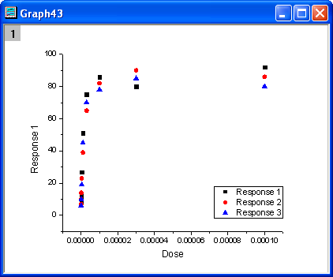
- X軸をダブルクリックして、X軸ダイアログを開きます。スケールタブで、タイプをLog10 に変更してOKボタンをクリックします。
- 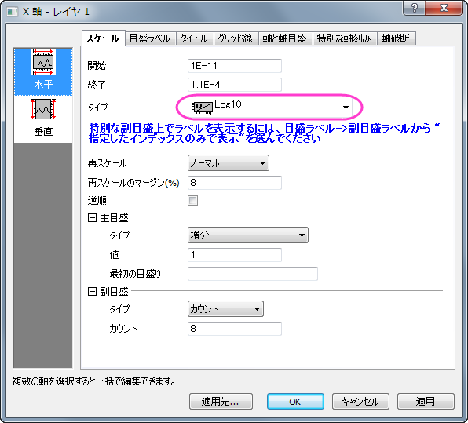
- 再スケールボタン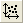をクリックしてプロットのスケールを調整します。
- 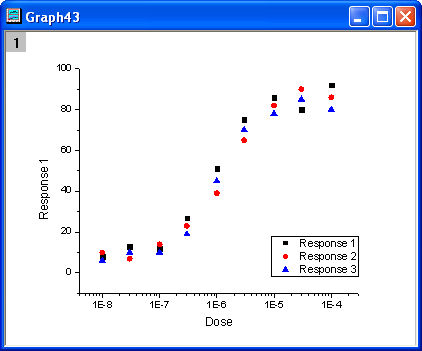
- メインメニューからガジェット：クイックシグモイダルフィットを選択し、addtool_sigmoidal_fitダイアログを開きます。設定タブの関数ドロップダウンリストからLogistic5を選んでください。
- 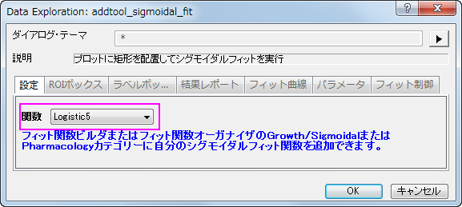
- ROIボックスのタブを開き、パラメータリストのブランチ内にあるパラメータx0、h、sのチェックを外します。
- 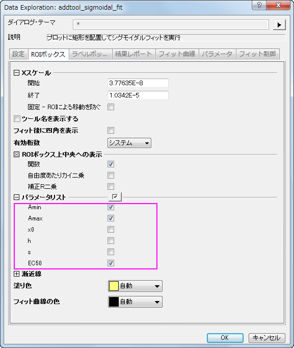
- フィット曲線タブを開き、グラフタイプのドロップダウンリストから平均、SDを選びます。そして、フィット曲線の出力先のドロップダウンリストからはソースブック、新しいシートを選びます。
- 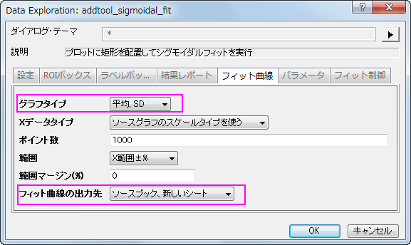
- OKボタンをクリックし、ROIボックスをグラフに追加します。ROIボックスの右上角には三角形のボタン
 があるのでそれをクリックし、コンテキストメニューからプロット群の最大範囲に拡大するを選択します。ROIボックスはグラフ上の全範囲をカバーします。
があるのでそれをクリックし、コンテキストメニューからプロット群の最大範囲に拡大するを選択します。ROIボックスはグラフ上の全範囲をカバーします。
- 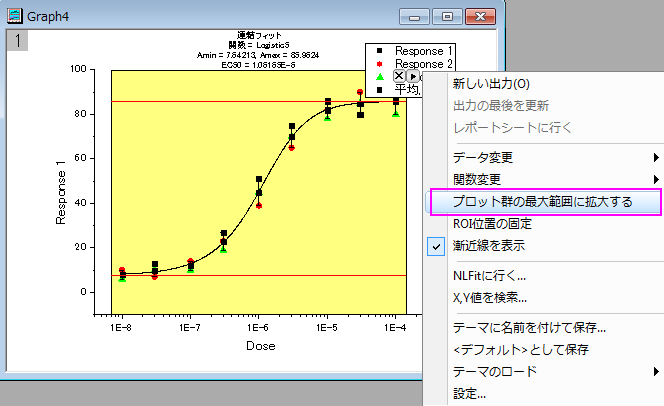
- 再び三角形ボタンをクリックして、メニューから設定...を選択します。シグモイドフィット設定ダイアログが再度開きます。このダイアログ内ではレポートタブを開き、出力先を「なし」に設定します。
- 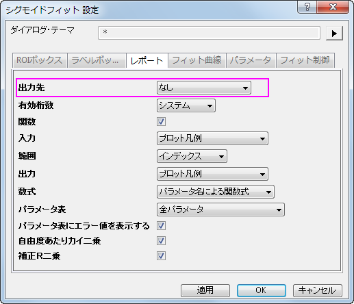
- OK をクリックして、ダイアログを閉じます。三角形ボタンをクリックし、コンテキストメニューから関数変更：Logisticを選び、フィット関数をLogisticに変更します。ROIボックスの上にあるラベルは、自動的に更新されます。
- 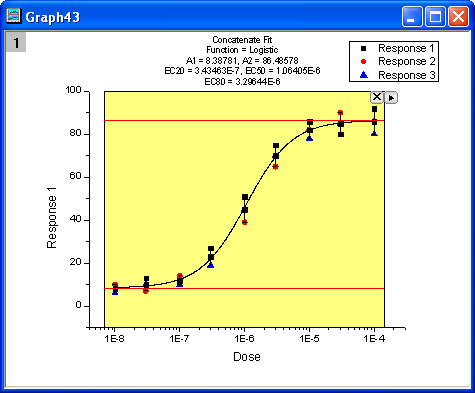
- 再度三角形ボタン をクリックして新しい出力を選び、フィット結果をワークシートとグラフに出力します。
- 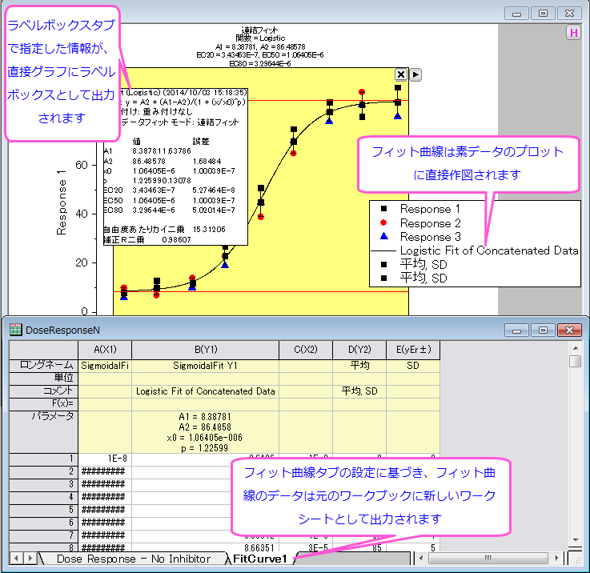
NLFitに接続
クイックシグモイダルフィットガジェットを使用している時は、簡単にNLFitに切り替えが出来ます。これにより、ガジェット内の設定で詳細なフィット結果のレポートを表示できます。
- 上記のステップ1からステップ８までをやり直してください。
- 三角形ボタン をクリックし、NLFitに行く…を選んでガジェットの設定を引き継いだNLFitダイアログを開きます。
- 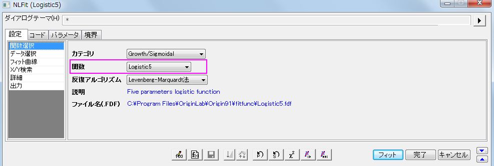
- 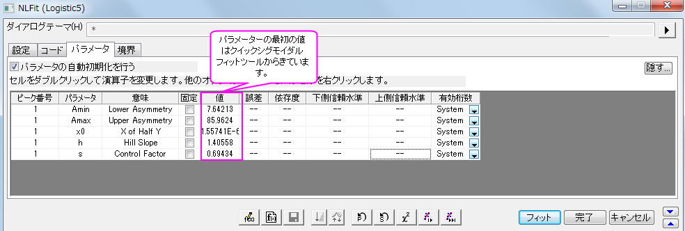
- フィットボタンをクリックすると、曲線フィットを実行します。フィット結果は、結果シートの出力と元のグラフに表示されます。 フィット結果はソースシートに出力されます。
- 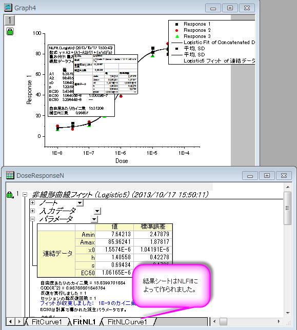
X/Y値を検索
このガジェットでは、フィットした曲線上でX/Yの値をすばやく求めることが出来ます。
- 一番目のセクションにあるステップ1からステップ８までをやり直します。
- 三角形ボタンをクリックし、X/Y値の検索...をメニューから選び、X/Y検索ダイアログを開きます。
- 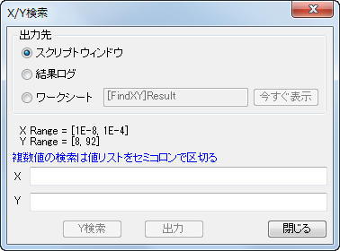
- ワークシートのラジオボタンを選択してYには40；45；50と入力し、Xを検索をクリックすると対応するXの値が空欄のXボックスに表示されます。それから出力ボタンをクリックすると、XとYの値を指定したワークシートに出力します。
- 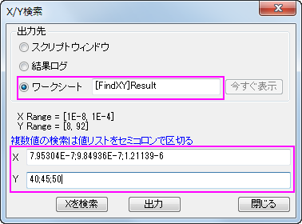
- ワークシートラジオボタンを選択してから今すぐ出力ボタンをクリックすると、FindX/Yワークブックを開きます。そして、閉じるボタンをクリックしてX/Y検索ダイアログを閉じます。
- 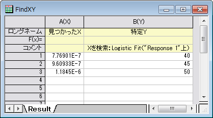